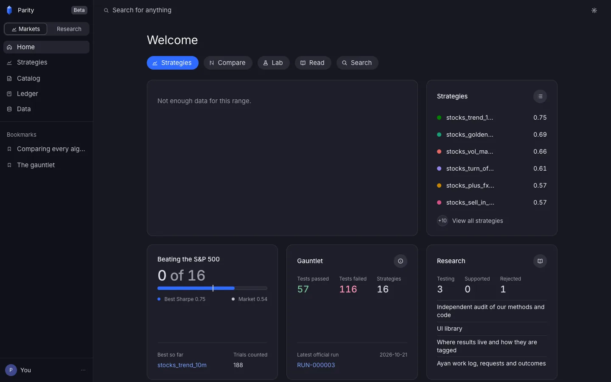
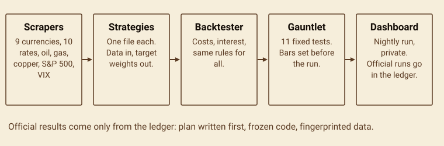
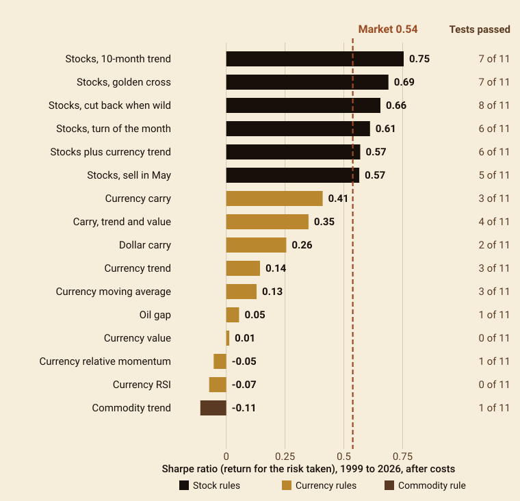
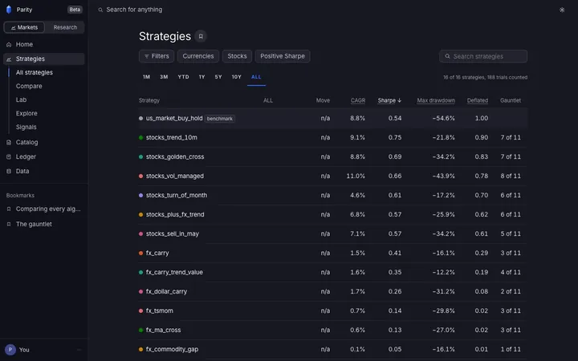
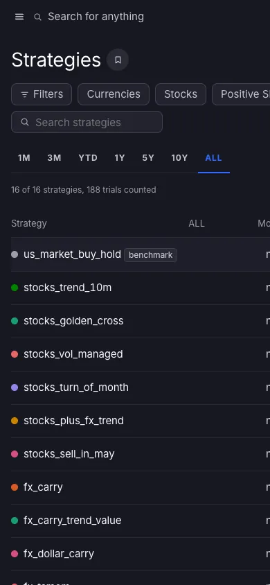

Research project
Parity
Can a trading program beat the S&P 500? We built the lab to find out. Sixteen strategies later, none has. We report that plainly.
- Private repo

0 of 16 strategies beat the S&P 500. Best Sharpe 0.75 against the market’s 0.54, and still not enough.
The question
Could a computer program that trades currencies earn more than just buying the 500 biggest US companies and waiting?
Most people who try this fool themselves. They test many ideas, keep the one that looks best, and call it a discovery. Parity is built so that cannot happen quietly. It is a proof of concept, not a product.
The question started narrow: a currency strategy, perhaps informed by commodity prices and macro news. The first three strategies all failed, so we widened it. Every idea we try, including stock rules, goes through the same tests, and every idea we try is counted.
By the numbers
- 75 of 78commits on the main line are mine
- 16strategies tested
- 11tests every strategy faces
- 188trials counted, so luck cannot pass for skill
- 72algorithms in the catalog
- 36data sources
How it works

One path from raw data to a verdict. Official results come only from the ledger.
- ScrapersPull free daily data: 9 currencies, 10 interest rates, oil, gas, copper, the S&P 500 and the VIX.
- StrategiesOne file each. A strategy turns data into how much to hold of what. Any can be removed at any time.
- One backtesterReplays history for every strategy the same way. It charges trading costs, credits interest, and can scale to the market’s own risk, paying for any borrowing.
- The gauntletEleven fixed tests. Six ask if it beats the market. Five ask if it is real or luck.
- Nightly jobRuns everything every night and posts results to a private dashboard.
- The ledgerOfficial results only count if the plan was written down first. More below.
The gauntlet
Eleven gates. Every strategy runs all of them, every time. The bars were fixed before we saw any results, so we cannot bend them.
| Strategy | A1 | A2 | A3 | A4 | A5 | A6 | B1 | B2 | B3 | B4 | B5 | Passed |
|---|---|---|---|---|---|---|---|---|---|---|---|---|
| Currency carryBuys high-interest currencies, sells low-interest ones | Fail | Fail | Fail | Fail | Fail | Fail | Pass | Fail | Pass | Pass | Fail | 3 of 11 |
| Currency trendFollows what each currency did over the past year | Fail | Fail | Fail | Fail | Fail | Fail | Fail | Fail | Pass | Pass | Pass | 3 of 11 |
| Oil gapBets two oil-linked currencies catch up with oil | Fail | Fail | Fail | Fail | Fail | Fail | Fail | Fail | Pass | Fail | Fail | 1 of 11 |
A. Does it beat the S&P 500? All six must pass.
- A1 Better return for the risk. Does it earn more per unit of bumpiness than the S&P 500?
- A2 More money at the same risk. Turned up to the market’s own bumpiness, with borrowing paid for, does it earn more?
- A3 Not just the luckiest try. Still good after allowing for how many ideas we tried (deflated Sharpe of 0.95 or more)?
- A4 Survives double costs. Does it still win if trading costs twice what we guessed?
- A5 Wins in every era. 2000 to 2008, 2009 to 2019 and 2020 on, separately.
- A6 Wins lately. Does it beat the market over the last five years alone?
B. Is there anything real here?
- B1 Clearly above zero. On 1,000 reshuffles of real history, does it still make money?
- B2 Timing matters. Same bets on random dates: does it do much worse?
- B3 Not one lucky setting. Nudge its settings. Does it still make money?
- B4 Not one lucky year. Delete its best year. Still positive?
- B5 Safe when stocks crash. Does it hold up in the stock market’s worst months?
Results
Return for the risk taken (Sharpe ratio), against holding the S&P 500. Higher is better.
The third official run, RUN-000003, put all 16 strategies through the gauntlet over 1999 to 2026. The market scores 0.54. Four stock rules score higher, from 0.66 to 0.75, but none passes all six beat-the-market tests once the number of ideas tried is counted. Every currency and commodity strategy scores below 0.42. In total 57 gates passed and 116 failed.


The first official run, RUN-000001 (2000 to 2026, costs included), tested three strategies. Carry scored 0.39 and passed 3 of 11 tests, trend 0.17 and 3 of 11, the oil gap 0.06 and 1 of 11. The S&P 500 scored 0.50 on those dates.
What we found
- Nothing beats the marketAll sixteen fail the “beat the S&P 500” bar once we count how many ideas we tried.
- Carry looks real, but smallHolding high-interest currencies earns a little, fairly reliably. Far less than stocks, and it loses when stocks crash.
- Trend faded after 2009Following currency trends worked mostly from 2000 to 2008. Over the last five years it made nothing.
- The oil idea shows nothingIt was our favorite. As built, it has no reliable effect.
Official runs, written down first
A result only counts if the plan came before it.
- RegisterWrite the strategies, the settings and the bar to pass. Nothing is run yet.
- RunRun it on a clean machine with frozen code and fingerprinted data.
- LedgerThe result goes in a tamper-evident log. Result tables in our docs are generated from it and cannot be edited by hand.
3 official runs. All failed their plan. One example: after the weekly oil idea failed, a monthly version looked better. We found that only after looking, so we wrote a strict rule first: pass at least 4 of the 5 “is it real” tests. It passed 2. We retired the idea.
A negative result, reported honestly
“It does not work” is a real answer. Most trading claims never show theirs.
- Every failed run stays in the record. Nothing is quietly dropped.
- We count every idea we tried, so luck cannot pass for skill.
- The tests have known weaknesses, and we list them in our docs.
The dashboard
The web app is private and sign-in only. It has the strategy table, a catalog of algorithms, the ledger, a lab, and a plain-words glossary. These screenshots are from my own copy running with the project’s data.

Strategies, sorted by Sharpe. The benchmark is the first row.Screenshot of my own app. 
The same app on a phone.Screenshot of my own app.


Next leads
- Hold stocks and add currency trend on top. Does the mix beat stocks alone?
- Do surprise economic and energy news move currencies in a predictable direction?
- Does the dollar weaken on days the Fed announces a decision?
Each one is written down as an open question with its bar. None is a result yet.
What I did
- Built the test engine: scrapers, one backtester with costs and carry, and the eleven-test gauntlet.
- Built the web app: a private dashboard with the catalog, ledger, lab and a plain-words glossary.
- Set up the nightly job and the pre-registered ledger.
- Tested 16 strategies against simply holding the S&P 500. None beat it.
- Built a catalog of 72 algorithms and 36 data sources, each with a report.
What I learned
- The bar has to exist before the resultWriting the plan first is what makes a failure believable. Every Sharpe in the tests is measured above the T-bill, a fix we made after an audit of our own method.
- Counting tries changes the answerFour stock rules beat the market on raw Sharpe. After allowing for 188 trials none passes all six gates.
- A small real effect is still a findingCarry passes some “is it real” tests while failing every “beats stocks” test. That is useful as a part of a mix, not on its own.
Not investment advice. No real money is traded. This is research, and its answer so far is no.